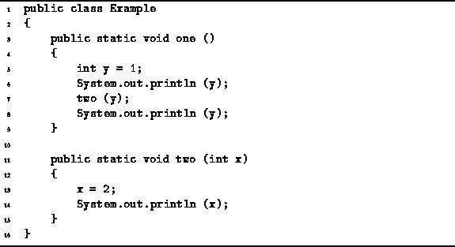

Data Structures and Algorithms
with Object-Oriented Design Patterns in Java
Data Structures and Algorithms
with Object-Oriented Design Patterns in Java
Consider the pair of Java methods defined in Program  .
On line 7, the method one calls the method two.
In general, every method call includes a (possibly empty) list of arguments.
The arguments specified in a method call are called
actual parameters .
In this case, there is only one actual parameter--y.
.
On line 7, the method one calls the method two.
In general, every method call includes a (possibly empty) list of arguments.
The arguments specified in a method call are called
actual parameters .
In this case, there is only one actual parameter--y.

Program: Parameter passing example: passing primitive types.
On line 11 the method two is defined as accepting a single argument of type int called x. The arguments which appear in a method definition are called formal parameters . In this case, the formal parameter is a primitive type.
The semantics of pass-by-value work like this: The effect of the formal parameter definition is to create a local variable of the specified type in the given method. For example, the method two has a local variable of type int called x. When the method is called, the values of the actual parameters are used assigned to the formal parameters before the body of the method is executed.
Since the formal parameters give rise to local variables,
if a new value is assigned to a formal parameter,
that value has no effect on the actual parameter.
Therefore, the output obtained produced by the method one
defined in Program is:
1 2 1
 Copyright © 1998 by Bruno R. Preiss, P.Eng. All rights reserved.
Copyright © 1998 by Bruno R. Preiss, P.Eng. All rights reserved.